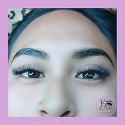

Las extensiones de pestañas son fibras sintéticas que se adhieren a las pestañas naturales para darles más longitud, volumen y curvatura.

Es un tratamiento que alarga y crea una ligera curva hacia arriba de manera natural y duradera, consiguiendo mayor longitud y espesor.
Consiste en la aplicación de producto específico en toda la extensión de las cejas para alisarlas y peinarlas de forma permanente.
Es un es un tratamiento semipermanente, 100% natural, que consiste en definir la forma de la ceja, coloreando la capa más superficial de la piel y el vello para corregir forma y rellenar los espacios donde no crezca vello.
